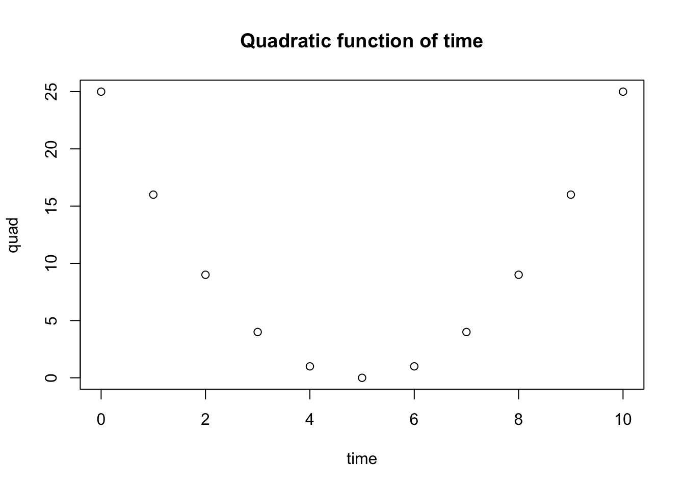

2 Functions and their graphs
Some fathers, if you ask them for the time of day, spit silver dollars.
Donald Barthelme, The Dead Father
Mathematical models describe how various quantities affect each other. In the last chapter we learned that these descriptions can be written down, often in the form of an equation. For instance, we can describe the total volume of blood pumped over a period of time as the product of stroke volume, the heart rate and the number of minutes, which can be written as an equation. The different quantities have their own meaning and roles, depending on what they stand for. To better describe how these quantities are related we use the deep idea of mathematical functions. In this chapter you will learn to do the following:
- use dimensional analysis to deduce the meaning of quantities in a model
- understand the concept of function, dependent and independent variables
- recognize basic functional forms and the shape of their graphs
- use R to plot functions
- understand basic models of reaction rates
2.1 Dimensions of quantities
What distinguishes a mathematical model from a mathematical equation is that the quantities involved have a real-world meaning. Each quantity represents a measurement, and associated with each one are the units of measurement. The number 173 is not enough to describe the height of a person - you are left to wonder 173 what? meters, centimeters, nanometers, light-years? Obviously, only centimeters make sense as a unit of measurement for human height; but if we were measuring the distance between two animals in a habitat, meters would be a reasonable unit, and it were the distance between molecules in a cell, we would use nanometers. Thus, any quantity in a mathematical model must have associated units, and any graphs of these quantities must be labeled accordingly.
In addition to units, each variable and parameter has a meaning, which is called the dimension of the quantity. For example, any measurement of length or distance has the same dimension, although the units may vary. The value of a quantity depends on the units of measurement, but its essential dimensionality does not. One can convert a measurement in meters to that in light-years or cubits, but one cannot convert a measurement in number of sheep to seconds - that conversion has no meaning.
Thus leads us to the fundamental rule of mathematical modeling: terms that are added or subtracted must have the same dimension. This gives mathematical modelers a useful tool called dimensional analysis, which involves replacing the quantities in an equation with their dimensions. This serves as a check that all dimensions match, as well as allowing to deduce the dimensions of any parameters for which the dimension was not specified.
Example. As we saw in chapter 1, the relationship between the amount blood pumped by a heart in a certain amount of time is expressed in the following equation, where \(V_{tot}\) and \(V_s\) are the total volume and stroke volume, respectively, \(R\) is the heart rate, and \(t\) is the time: \[ V_{tot} = V_sRt \] The dimension of a quantity \(X\) is denoted by \([X]\); for example, if \(t\) has the dimension of time, we write \([t] = time\). The dimension of volume is \([V_{tot}] = length^3\), the dimension of stroke volume is \([V_s] = volume/beat\) and the dimension of time \(t\) is time, so we can re-write the equation above in dimensional form:
\[length^3 = length^3/ beat \times R \times time\]
Solving this equation for R, we find that it must have the dimensions of \([R] = beats/time\). It can be measured in beats per minute (typical for heart rate), or beats per second, beats per hour, etc. but the dimensionality of the quantity cannot be changed without making the model meaningless.
There are also dimensionless quantities, or pure numbers, which are not tied to a physical meaning at all. Fundamental mathematical constants, like \(\pi\) or \(e\), are classic examples, as are some important quantities in physics, like the Reynolds number in fluid mechanics. Quantities with a dimension can be made dimensionless by dividing them by another quantity with the same dimension and “canceling” the dimensions. For instance, we can express the height of a person as a fraction of the mean height of the population; then the height of a tall person will become a number greater than 1, and the height of a short one will become less than 1. This new dimensionless height does not have units of length - they have been divided out by the mean height. This is known as rescaling the quantity, by dividing it by a preferred scale. There is a fundamental difference between rescaling and changing the units of a quantity: when changing the units, e.g. from inches to centimeters, the dimension remains the same, but if one divides the quantity by a scale, it loses its dimension.
Example. The model for a population of bacteria that doubles every hour is described by the equation, where \(P_0\) is initial number of bacteria and \(P\) is the population after \(t\) hours: \[ P = P_0 2^t \] Let us define the quantity \(R=P/P_0\), so we can say that population increased by a factor of \(R\) after \(t\) hours. This ratio is a dimensionless quantity because \(P\) and \(P_0\) have the same dimension of bacterial population, which cancel out. The equation for \(R\) can be written as follows: \[ R= 2^t \] According to dimensional analysis, both sides of the equation have to be dimensionless, so \(t\) must also be a dimensionless variable. This is surprising, because \(t\) indicates the number of hours the bacterial colony has been growing. This reveals the subtle fact that \(t\) is a rescaled variable obtained by dividing the elapsed time by the length of the reproductive cycle. Because of the assumption that the bacteria divide exactly once an hour, \(t\) counts the number of hours, but if they divided once a day, \(t\) would denote the number of days. So \(t\) doesn’t have units or dimensions, but instead denotes the dimensionless number of cell divisions.
2.1.1 Exercises
For each biological model below determine the dimensions of the parameters, based on the given dimensions of the variables.
Model of number of mutations \(M\) as a function of time \(t\): \[ M(t) = M_0 + \mu t\]
Model of molecular concentration \(C\) as a function of time \(t\): \[ C(t) = C_0 e^{-kt} \]
Model of tree height \(H\) (length) as a function of age \(a\) (time): \[ H(a) = \frac{b a}{c + a}\]
Model of cooperative binding of ligands, with fraction of bound receptors \(\theta\) as a function of ligand concentration \(L\): \[ \theta (L) = \frac{L^n}{L^n + K_d}\]
Model of concentration of a gene product \(G\) (concentration) as a function of time \(t\): \[ G(t) = G_m (1 - e^{-\alpha t})\]
Michaelis-Menten model of enzyme kinetics, \(v\) is reaction rate (1/time) and \(S\) is substrate concentration: \[ v(S) = \frac{v_{max} S}{K_m + S}\]
Logistic model of population growth, \(P\) is population size and time \(t\): \[ P(t) = \frac{A e^{kt}}{1 + B(e^{kt} -1)} \]
2.2 Functions and their graphs
A relationship between two variables addresses the basic question: when one variable changes, how does this affect the other? An equation, like the examples in the last section, allows one to calculate the value of one variable based on the other variable and parameter values. In this section we seek to describe more broadly how two variables are related by using the mathematical concept of functions.
Definition
A function is a mathematical rule which has an input and an output. A function returns a well-defined output for every input, that is, for a given input value the function returns a unique output value.
In this abstract definition of a function it doesn’t have to be written as an algebraic equation, it only has to return a unique output for any given input value. In mathematics we usually write them down in terms of algebraic expressions. As in mathematical models, you will see two different kinds of quantities in equations that define functions: variables and parameters. The input and the output of a function are usually variables, with the input called the independent variable and the output called the dependent variable.
The relationship between the input and the output can be graphically illustrated in a graph, which is a collection of paired values of the independent and dependent variable drawn as a curve in the plane. Although it shows how the two variables change relative to each other, parameters may change too, which results in a different graph of the function. While graphing calculators and computers can draw graphs for you, it is very helpful to have an intuitive understanding about how a function behaves, and how the behavior depends on the parameters. Here are the three questions to help picture the relationship (assume \(x\) is the independent variable and it is a nonnegative real number):
- what is the value of the function at \(x=0\)?
- what does the function do when \(x\) becomes large (\(x \to \infty\))?
- what does the function do between the two extremes?
Below you will find examples of fundamental functions used in biological models with descriptions of how their parameters influence their graphs.
2.2.1 linear and exponential functions
The reader is probably familiar with linear and exponential functions from algebra courses. However, they are so commonly used that it is worth going over them to refresh your memory and perhaps to see them from another perspective.
Definition
A linear function \(f(x)\) is one for which the difference in two function values is the same for a specific difference in the independent variable.
In mathematical terms, this can be written an equation for any two values of the independent variable \(x_1\) and \(x_2\) and a difference \(\Delta x\):
\[ f(x_1 + \Delta x) - f(x_1) = f(x_2 + \Delta x) - f(x_2) \] The general form of the linear function is written as follows:
\[\begin{equation} f(x) = ax + b \label{eq:linear_funk} \end{equation}\]
The function contains two parameters: the slope \(a\) and the y-intercept \(b\). The graph of the linear function is a line (hence the name) and the slope \(a\) determines its steepness. A positive slope corresponds to the graph that increases as \(x\) increases, and a negative slope corresponds to a declining function. At \(x=0\), the function equals \(b\), and as \(x \to \infty\), the function approaches positive infinity if \(a>0\), and approaches negative infinity if \(a<0\).
Definition
An exponential function \(f(x)\) is one for which the ratio of two function values is the same for a specific difference in the independent variable.
Mathematically speaking, this can be written as follows for any two values of the independent variable \(x_1\) and \(x_2\) and a difference \(\Delta x\): \[ \frac{f(x_1 + \Delta x)}{f(x_1)} = \frac{f(x_2 + \Delta x)}{f(x_2)}\]
Exponential functions can be written using different symbolic forms, but they all have a constant base with the variable \(x\) in the exponent. I prefer to use the constant \(e\) (base of the natural logarithm) as the base of all the exponential functions, for reasons that will become apparent in chapter 15. This does not restrict the range of possible functions, because any exponential function can be expressed using base \(e\), using a transformation: \(a^x = e^{x \ln(a)}\). So let us agree to write exponential functions in the following form:
\[\begin{equation} f(x) = a e^{rx} \label{eq:exp_funk} \end{equation}\]
The function contains two parameters: the \(r\) and the multiplicative constant \(a\). The graph of the exponential function is a curve which crosses the y-axis at \(y=a\) (plug in \(x=0\) to see that this is the case). As \(x\) increases, the behavior of the graph depends on the sign of the rate constant \(r\). If \(r>0\), the function approaches infinity (positive if \(a>0\), negative if \(a<0\)) as \(x \to \infty\). If \(r<0\), the function decays at an ever-decreasing pace and asymptotically approaches zero as \(x \to \infty\). Thus the graph of \(f(x)\) is a curve either going to infinity or a curve asymptotically approaching 0, and the steepness of the growth or decay is determined by \(r\).
2.2.2 Exercises
Answer the questions below, some of which refer to the function graphs in figure @ref(ch2-funk1).
Which of the linear graphs in the first figure corresponds to \(f(x) = 5x\) and which corresponds to \(f(x) = 10-x\)? State which parameter allows you to connect the function with its graph and explain why.
Which of the exponential graphs in the second figure corresponds to \(f(x) = 0.1e^{0.5x}\) and which corresponds to \(f(x) = 12e^{-0.2x}\)? State which parameter allows you to connect the function with its graph and explain why.
Demonstrate algebraically that a linear function of the form given in equation \(\ref{eq:linear_funk}\) satisfies the property of linear functions from definition .
Demonstrate algebraically that an exponential function of the form given in equation \(\ref{eq:exp_funk}\) satisfies the property of exponential functions from definition .
Modify the exponential function by adding a constant term to it \(f(x) = a e^{rx} + b\). What is is the value of this function at \(x=0\)?
How does the function defined in the previous exercise, \(f(x) = a e^{rx} + b\), how does it behave as \(x \to \infty\) if \(r>0\)?
How does the function \(f(x) = a e^{rx} + b\) behave as \(x \to \infty\) if \(r<0\)?
2.2.3 rational and logistic functions
Let us now turn to more complex functions, made up of simpler components that we understand. Consider a ratio of two polynomials, called a rational function. The general form of such functions can be written down as follows, where ellipsis stands for terms with powers lower than \(n\) or \(m\): \[\begin{equation} f(x) = \frac{a_0 + ... + a_n x^n}{b_0 + ... + b_m x^m} \label{eq:rational_funk} \end{equation}\] The two polynomials may have different degrees (highest power of the terms, \(n\) and \(m\)), but they are usually the same in most biological examples. The reason is that if the numerator and the denominator are ``unbalanced’’, one will inevitably overpower the other for large values of \(x\), which would lead to the function either increasing without bound to infinity (if \(n>m\)) or decaying to zero (if \(m>n\)). There’s nothing wrong with that, mathematically, but rational functions are most frequently used to model quantities that approach a nonzero asymptote for large values of the independent variable.
For this reason, let us assume \(m=n\) and consider what happens as \(x \to \infty\). All terms other than the highest-order terms become very small in comparison to \(x^n\) (this is something you can demonstrate to yourself using R), and thus both the numerator and the denominator approach the terms with power \(n\). This can be written using the mathematical limit notation \(\lim_{x \to \infty}\) which describes the value that a function approaches when the independent variable increases without bound: \[ \lim_{x \to \infty} \frac{a_0 + ... + a_n x^n}{b_0 + ... + b_n x^n} = \frac{ a_n x^n}{ b_n x^n} = \frac{ a_n}{ b_n} \] Therefore, the function approaches the value of \(a_n /b_n\) as \(x\) grows.
Similarly, let us consider what happens when \(x=0\). Plugging this into the function results in all of the terms vanishing except for the constant terms, so \[ f(0) = \frac{ a_0}{ b_0} \] Between 0 and infinity, the function either increases or decreases monotonically, depending on which value (\(a_n /b_n\) or \(a_0/b_0\)) is greater. Two examples of plots of rational functions are shown in figure \(\ref{fig:ch2_sigmoidal_plots}\), which shows graphs increasing from 0 to 1. Depending on the degree of the polynomials in a rational function, it may increase more gradually (solid line) or more step-like (dashed line).
The following model, called the Hill equation , describes the fraction of receptor molecules which are bound to a ligand, which is a chemical term for a free molecule that binds to another, typically larger, receptor molecule. \(\theta\) is the fraction of receptors bound to a ligand, \(L\) denotes the ligand concentration, \(K_d\) is the dissociation constant, and \(n\) called the binding cooperativity or Hill coefficient: \[ \theta = \frac{L^n}{ L^n +K_d}\]
The Hill equation is a rational function, and Figure \(\ref{fig:ch2_sigmoidal_plots}\) shows plots of the graphs of two such function in the right panel. This model is further explored in exercise 2.2.10.
Example. A common model of population over time is the logistic function. There are variations on how it is written down, but here is one general form: \[\begin{equation} f(x) = \frac{a e^{rx} }{b+e^{rx}} \label{eq:logistic_funk} \end{equation}\]
The numerator and denominator both contain exponential functions with the same power. If \(r>0\) when \(x \to \infty\), the denominator approaches \(e^{rx}\), since it becomes much greater than \(b\), and we can calculate: \[ \lim_{x \to \infty} = \frac{a e^{rx} }{e^{rx}} = a; \; \mathrm{if} \; r>0 \]
On the other hand, if \(r<0\), then the numerator approaches zero as \(x \to \infty\), and so does the function \[ \lim_{x \to \infty} = \frac{0}{b} = 0; \; \mathrm{if} \; r<0 \]
Notice that switching the sign of \(r\) has the same effect as switching the sign of \(x\), since they are multiplied. Which means that for positive \(r\), if \(x\) is extended to negative infinity, the function approaches 0. This is illustrated in the second plot in Figure \(\ref{fig:ch2_sigmoidal_plots}\), which shows two logistic functions increasing from 0 to a positive level, one with \(a=20\) (solid line) and the second with \(a=10\) (dashed line). The graph of logistic functions has a characteristic sigmoidal (S-shaped) shape, and its steepness is determined by the rate \(r\): if \(r\) is small, the curve is soft, if \(r\) is large, the graph resembles a step function.
2.2.4 Exercises:
For each biological model below answer the following questions in terms of the parameters in the models, assuming all are nonnegative real numbers. 1) what is the value of the function when the independent variable is 0? 2) what value does the function approach when the independent variable goes to infinity? 3) verbally describe the behavior of the functions between 0 and infinity (e.g., function increases, decreases).
Model of number of mutations \(M\) as a function of time \(t\): \[ M(t) = M_0 + \mu t\]
Model of molecular concentration \(C\) as a function of time \(t\): \[ C(t) = C_0 e^{-kt} \]
Model of cooperative binding of ligands, with fraction of bound receptors \(\theta\) as a function of ligand concentration \(L\): \[ \theta = \frac{L^n}{L^n + K_d}\]
Model of tree height \(H\) (length) as a function of age \(a\) (time): \[ H(a) = \frac{b a }{c + a}\]
Model of concentration of a gene product \(G\) (concentration) as a function of time \(t\): \[ G(t) = G_m (1 - e^{-\alpha t})\]
Michaelis-Menten model of enzyme kinetics, \(v\) is reaction rate (1/time) and \(S\) is substrate concentration: \[ v(S) = \frac{v_{max} S}{K_m + S}\]
Logistic model of population growth, \(P\) is population size and time \(t\): \[ P(t) = \frac{A e^{kt}}{1 + B(e^{kt} -1)} \]
2.3 Vectors and plotting in R
2.3.1 writing scripts and calling functions
Programming means arranging a number of commands in a particular order to perform a task. Typing them one at a time into the command line is inefficient and error-prone. Instead, the commands are written into a file called a program or script (the name depends on the type of language; since R is a scripting language you will be writing scripts), which can be edited, saved, copied, etc. To open a new script file, in R Studio, go to File menu, and choose New R Script. This will open an editor window where you can type your commands. To save the script file (do this often!!), click the Save button (with the little floppy disk icon) or select Save from the File menu. You will also see small buttons at the top of the window that say Run, Re-run, and Source. The first two will run either the current line or a selected region of the script, while the Source button will run the entire file. Now that you know how to create a script, you should never type your R code into the command line, unless you’re testing a single command to see what it does, or looking up help.
R comes equipped with many functions that correspond to standard mathematical functions. As we saw in section \(\ref{sec:comp1}\), exp() is the exponential function that returns \(e\) raised to the power of the input value. Other common ones are: sqrt() returns the square root of the input value; sin() and cos() return the sine and the cosine of the input value, respectively. Note that all of these function names are followed by parentheses, which is a hallmark of a function (in R as well as in mathematics). This indicates that the input value has to go there, for example exp(5). To compute the value of \(e^5\), save it into a variable called var1 and then print out the value on the screen, you can create the following script:
var1 <- exp(5)
print(var1)[1] 148.4132If you run the above code chunk in R Studio you will see two things happen: a variable named var1 appears in the Environment window (top right) with the value 148.41… and the same value is printed out in the command line window (bottom left).
The most important principle of the procedural brand of programming (which includes R) is this: the computer (that is, the compiler or interpreter) evaluates the commands from top to bottom, one at a time. The variables are used with the values that they are currently assigned. If one variable (var1) was assigned in terms of another (var2), and then var2 is changed later, this does not change the value of var2. Here is an illustration of how this works:
var2 <- 20
var1 <- var2/20
print(var2)[1] 20var2 <- 10
print(var1)[1] 1Notice that var1 doesn’t change, because the R interpreter reads the commands one by one, and does not go back to re-evaluate the assignment for var1 after var2 is changed. Learning to think in this methodical, literal manner is crucial for developing programming skills.
2.3.2 vector variables
Variables may contain more than a single number, they can also store a bunch of numbers, which is then called an array. When numbers in an array are organized as a single ordered list, this is called a vector. There are several ways of producing a vector of numbers in R.
2.3.2.1 c() function
The most direct method of making a vector is to put together several values by listing them inside the function c() and assigning the output to a variable, e.g. my.vec:
my.vec<-c(pi,45,912.8, 0)
print(my.vec)[1] 3.141593 45.000000 912.800000 0.000000This variable my.vec is now a vector variable that contains four different numbers. Each of those numbers can be accessed individually by referencing its position in the vector, called the index. In the R language the the index for the first number in a vector is 1, the index for the second number is 2, etc. The index is placed in square brackets after the vector name, as follows:
print(my.vec[1])[1] 3.141593print(my.vec[2])[1] 45print(my.vec[3])[1] 912.8print(my.vec[4])[1] 02.3.2.2 the colon operator
Another way to generate a sequence of numbers in a particular order is to use the colon operator, which produces a vector of integers from the first number to the last, inclusive. Here are two examples:
my.vec1<-1:20
print(my.vec1) [1] 1 2 3 4 5 6 7 8 9 10 11 12 13 14 15 16 17 18 19 20my.vec2<-0:-20
print(my.vec2) [1] 0 -1 -2 -3 -4 -5 -6 -7 -8 -9 -10 -11 -12 -13 -14 -15 -16 -17 -18
[20] -19 -20You can also access some but not all of the values stored in a vector simultaneously. To do this, enter a vector of positive integers inside the square brackets, either using the colon operator or using the c() function. Here are two examples, the first prints out the 4th through the 10th element of the vector my.vec1, while the second prints out the 1st, 5th, and 11th elements of the vector my.vec2:
print(my.vec1[4:10])[1] 4 5 6 7 8 9 10print(my.vec2[c(1,5,11)])[1] 0 -4 -102.3.2.3 seq() function
If you want to generate a sequence of numbers with a constant difference other than 1, you’re in luck: R provides a function called seq(). It takes three inputs: the starting value, the ending value, and the step (difference between successive elements). For example, to generate a list of numbers starting at 20 up to 50, with a step size of 3, type the first command; to obtain the same sequence in reverse, use the second command:
my.vec1<-seq(20,50,3)
print(my.vec1) [1] 20 23 26 29 32 35 38 41 44 47 50my.vec2<-seq(50,20,-3)
print(my.vec2) [1] 50 47 44 41 38 35 32 29 26 23 202.3.2.4 rep() function
Sometimes you want to create a vector of repeated values. For example, you can create a variable with 20 zeros, you can use rep() like this:
zeros <- rep(0,20)
print(zeros) [1] 0 0 0 0 0 0 0 0 0 0 0 0 0 0 0 0 0 0 0 0You can repeat any value, say create a vector by repeating the number pi:
pies <- rep(pi,7)
print(pies)[1] 3.141593 3.141593 3.141593 3.141593 3.141593 3.141593 3.141593You can even repeat another vector, like the vector my.vec that was assigned above:
my.vecs <- rep(my.vec, 5)
print(my.vecs) [1] 3.141593 45.000000 912.800000 0.000000 3.141593 45.000000
[7] 912.800000 0.000000 3.141593 45.000000 912.800000 0.000000
[13] 3.141593 45.000000 912.800000 0.000000 3.141593 45.000000
[19] 912.800000 0.0000002.3.3 calculations with vector variables
NewVec <- 2*my.vec
print(NewVec)[1] 6.283185 90.000000 1825.600000 0.000000You can also perform calculations with multiple vector variables, but this requires extra care. R can perform any arithmetic operation with two vector variables, for instance adding two vectors results in a vector containing the sum of corresponding elements of the two vectors:
my.vec1<-1:5
my.vec2<-0:4
print(my.vec1)[1] 1 2 3 4 5print(my.vec2)[1] 0 1 2 3 4sum.vec<-my.vec1+my.vec2
print(sum.vec)[1] 1 3 5 7 9One needs to take care that the two vectors have the same number of elements (length). If you try to operate on (e.g. add) two vectors of different lengths, R will return a warning and the result will not be what you expect:
my.vec1<-1:2
my.vec2<-0:4
print(my.vec1)[1] 1 2print(my.vec2)[1] 0 1 2 3 4sum.vec<-my.vec1+my.vec2Warning in my.vec1 + my.vec2: longer object length is not a multiple of shorter
object lengthprint(sum.vec)[1] 1 3 3 5 52.3.4 Exercises
The following R commands or short scripts contain errors; your job is to fix them so they runs as described.
- Assign a vector of three numbers to a variable:
date_num <- (3,8,16)- Assign a range of values to a vector variable and print out the third one:
the.vals <- 0:10
print[the.vals(3)]- Assign a range of values to a vector variable and print out the fourtieth and sixty-first values:
all.the.vals <- 0:100
print(all.the.vals[40,61])- Take the two vectors assigned above and assign their product to another vector:
product <- the.vals*all.the.vals- Create a vector vec1 of ten integers and print the second and the eighth elements:
vec1 <- 11:20
print(vec1[2:8])- Create a vector
vec1and then multiply all of its elements by 20 and assign it to another vector:
vec1<-seq(-3,2,0.1)
vec2 <- 20vec1- Create a vector
vec1, a vectorvec2and print out all the elements of the first divided by the second:
vec1 <- 0:5
vec2 <- 3:8
print[vec1/vec2]2.3.5 Plotting with vectors
curve(x^2,0,10,lwd=3,xlab='x', ylab='quadratic',cex.axis=1.5,cex.lab=1.5)
curve(20*exp(-0.5*x),0,5,lwd=3,xlab='x', ylab='exponential',cex.axis=1.5,cex.lab=1.5)There are several ways of creating plots of mathematical functions or data R. If you want to plot a mathematical function, the simplest function is curve(). You can tell that this is a function, because it uses parentheses; the first input is an expression for the function, and the next two define the range of the independent variable over which to plot the graph. Two examples of plotting a quadratic function over the range from 0 and 5, and an exponential variation over the range of 0 to 10 are shown in figure \(\ref{fig:ch2-plot1}\).
One can change the default look of the plot produced by curve by setting different options, which are optional inputs into the curve function, One is the line width lwd which can be increased from the default value of 1 to produce thicker curves, as demonstrated in the example above. One can add labels on the x and y axes with xlab and ylab options, respectively; note that these are strings of characters, and thus must be put in quotes to differentiate them from a variable name. There is one very important option not shown above: that of overlaying a curve on top of an existing plot, which is done by typing add=TRUE. This option takes logical (Boolean) values TRUE and FALSE, which must be typed in all caps and without quotes.
2.3.5.1 plot() function
In addition to curve, one can use the function plot() in R to create two dimensional graphs from two vector-valued variables of the same length, e.g. plot(x,y). The first input variable corresponds to the independent variable (e.g. x), which is plotted on the x-axis, and the second variable corresponds to the dependent variable (e.g. y) which is plotted on the y-axis. In figure \(\ref{fig:ch2-plot2}\) you see graphs of exponential and logistic function plotted using plot().
The following chunk creates a vector variable time, then calculates a new variable quad using time in a single operation:
time <- 0:10
quad <- (time - 5)^2
print(time) [1] 0 1 2 3 4 5 6 7 8 9 10print(quad) [1] 25 16 9 4 1 0 1 4 9 16 25This chunk plots the two vector variables quad as a function of time, and adds a title to the plot
plot(time,quad, main = 'Quadratic function of time')
The default plot style in R uses circles to indicate each plotted point. To change it, you need to set the option t (type), for example, setting t='l' (the lowercase letter L) produces a continuous line connecting the individual data points.
plot(time,quad, main = 'Quadratic function of time', type = 'l', xlab='time', ylab = 'y = f(t)' )plot() is a versatile function that has many options function has many options which can be changed to determine the color, the style, and other attributes of the plot. For a full list type help(plot) in the console or type plot in the search bar of the Help pane in the bottom right window.
2.3.5.2 using lines() or points()
You may also want to plot multiple graphs on the same figure. The plot() function creates a new plot window, so if you want to add another plot on top of the first one, you have to use another function. There are two ones available: lines() which produces continuous curves connecting the points, and points() which plots individual symbols at every point.
Let us illustrate this by plotting two different exponential functions on one plot, and two different logistic functions on the second one, which were discussed in section \(\ref{sec:math2}\). When you’ve got multiple plots on the same figure, they need to be distinct and labeled. To distinguish them, below I use the option col to specify the color of the plot, and I add a legend describing the parameters of each plot to the figure \(\ref{fig:ch2-plot2}\). The function has a lot of options, so if you want to understand the details, type help(legend) in the prompt or go to Help tab in the lower right frame of R Studio and type legend.
x<-seq(0,10,0.5)
y<-10+20*exp(-0.5*x)
plot(x,y, xlab='x', ylab='exponential',col=1,lwd=3)
y<-10+20*exp(-2*x)
lines(x,y,col=2,lwd=3)
leg.txt=c("b=10,a=20,r=-0.5", "b=10,a=20,r=-2")
legend("topright", leg.txt, col=1:2, pch=c(1,NA), lty=c(0,1), lwd=3)
x<-seq(-10,10,1)
y<-20*exp(0.5*x)/(1+exp(0.5*x))
plot(x,y,xlab='x',ylab='logistic',col=4,lwd=3)
y<-20*exp(1.5*x)/(1+exp(1.5*x))
lines(x,y,col=2,lwd=3)
leg.txt=c("a=20,b=1,r=0.5", "a=20,b=1,r=1.5")
legend("topleft", leg.txt, col=c(4,2), pch=c(1,NA), lty=c(0,1), lwd=3)2.3.6 Exercises
The following R commands or short scripts contain errors; your job is to fix them so they runs as described.
- Multiply a vector by a constant and add another constant and assign the result to a vector:
new.vals <- 5 + 8the.vals- Assign range to be a sequence of values from 0 to 100 with step of 0.1, and calculate the vector variable result as the square of the vector variable range:
range <- seq(0,0.1,100)
result <- square(range)- Plot result as a function of range:
plot(result, range)- Plot the graph of the function \(f(x) = (45-x)/(4x+3)\) over the range of 0 to 100:
curve((45-x)/(4x+3), 0, 100)- Plot a quadratic function with specified coefficients \(a\), \(b\), \(c\) over a given range of independent variable \(x\):
a<-10
b<- -15
c<- 5
y<-a*x^2+b*x+c
x<-seq(-0.5,2,0.01)
plot(x,y,type='l')- Overlay two different plots of the logistic function with different values of the parameter \(r\):
time<-0:100
a<-1000
b<-50
r<-0.1
Population<-a*exp(r*time)/(b+exp(r*time))
plot(time,Population,type='l')
r<-10
lines(time,Population,col=2)2.4 Rates of biochemical reactions
Living things are dynamic, they change with time, and much of mathematical modeling in biology is interested in describing these changes. Some quantities change fast and others slowly, and every dynamic quantity has a rate of change, or rate for short. Usually, the quantity that we want to track over time is the variable, and in order to describe how it changes we introduce a rate parameter. If we are describing changes over time, all rate parameters have dimensions with time in the denominator. As a simple example, the velocity of a physical object describes the change in distance over time, so its dimension is \([v] = length/time\).
On the most fundamental level, the work of life is performed by molecules. The protein hemoglobin transports oxygen in the red blood cells, while neurotransmitter molecules like serotonin carry signals between neurons. Enzymes catalyze reactions, like those involved in oxidizing sugar and making ATP, the energy currency of life. Various molecules bind to DNA to turn genes on and off, while myosin proteins walk along actin fibers to create muscle contractions.
In order to describe the activity of biological molecules, we must measure and quantify them. However, they are so small and so numerous that it is not usually practical to count individual molecules (although with modern experimental techniques it is sometimes possible). Instead, biologists describe their numbers using concentrations. Concentration has dimensions of number of molecules per volume, and the units are typically molarity, or moles (\(\approx 6.022*10^{23}\) molecules) per liter. Using concentrations to describe molecule rests on the assumption that there are many molecules and they are well-mixed, or homogeneously distributed throughout the volume of interest.
Molecular reactions are essential for biology, whether they happen inside a bacterial cell or in the bloodstream of a human. Reaction kinetics refers to the description of the rates, or the speed, of chemical reactions. Different reactions occur with different rates, which may be dependent on the concentration of the reactant molecule. Consider a simple reaction of molecule \(A\) (called the substrate) turning into molecule \(B\) (called the product), which is usually written by chemists with an arrow: \[ A \xrightarrow{k} B \] But how fast does the reaction take place? To write down a mathematical model, we need to define the quantities involved. First, we have the concentration of the molecule \(A\), with dimensions of concentration. Second, we have the rate of reaction, let us call it \(v\), which has dimension of concentration per time (just like velocity is length per time). How are the two quantities related?
2.4.1 Constant (zeroth-order) kinetics
In some circumstances, the reaction rate \(v\) does not depend on the concentration of the reactant molecule \(A\). In that case, the relationship between the rate constant \(k\) and the actual rate \(v\) is: \[\begin{equation} v = k \label{eq:kinetics_0th_order} \end{equation}\]
Dimensional analysis insists that the dimension of \(k\) must be the dimension of \(v\), or concentration/time. This is known as constant, or zero-order kinetics, and it is observed at concentrations of \(A\) when the reaction is at its maximum velocity: for example, ethanol metabolism by ethanol dehydrogenase in human liver cannot proceed any faster than about 1 drink per hour.
2.4.2 First-order kinetics
. In other conditions, it is easy to imagine that increasing the concentration of the reactant \(A\) will speed up the rate of the reaction. A simple relationship of this type is linear: \[\begin{equation} v = kA \label{eq:kinetics_1st_order} \end{equation}\]
In this case, the dimension of the rate constant \(k\) is 1/time. This is called first-order kinetics, and it usually describes reactions when the concentration of \(A\) is small, and there are plenty of free enzymes to catalyze more reactions.
2.4.3 Michaelis-Menten model of enzyme kinetics
However, if the concentration of the substrate molecule \(A\) is neither small nor large, we need to consider a more sophisticated model. An enzyme is a protein which catalyzes a biochemical reaction, and it works in two steps: first it binds the substrate, at which point it can still dissociate and float away, and then it actually catalyzes the reaction, which is usually practically irreversible (at least by this enzyme) and releases the product. The enzyme itself is not affected or spent, so it is free to catalyze more reactions. Let denote the substrate (reactant) molecule by \(A\), the product molecule by \(B\), the enzyme by \(E\), and the complex of substrate and enzyme \(AE\). The classic chemical scheme that describes these reactions is this: \[ A + E \underset{k_{-1}}{\overset{k_1}{\rightleftharpoons}} AE \xrightarrow{k_2} E + B \]
You could write three different kinetic equations for the three different arrows in that scheme. Michaelis and Menten used the simplifying assumptions that the binding and dissociation happens much faster than the catalytic reaction, and based on this they were able to write down an approximate, but extremely useful Michaelis-Menten model of an enzymatic reaction: \[\begin{equation} v = \frac{v_{max} A}{K_M+A} \label{eq:kinetics_MM_kinetics} \end{equation}\] Here \(v\) refers to the rate of the entire catalytic process, that is, the rate of production of \(B\), rather than any intermediate step. Here the reaction rate depends both on the concentration of the substrate \(A\) and on the two constants \(v_{max}\), called the maximum reaction rate, and the constant \(K_M\), called the Michaelis constant. They both depend on the rate constants of the reaction, and \(v_{max}\) also depends on the concentration of the enzyme. The details of the derivation are beyond us for now, but you will see in the following exercises how this model behaves for different values of \(A\).